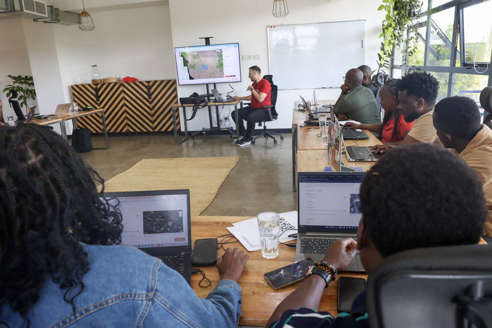

Trainer & Facilitator · Humanitarian OpenStreetMap Team

Facilitated a two-day hands-on training workshop with 12 OSM Kenya mappers, testing and documenting fAIr's training workflow in a real-world community context. Day 1 focused on understanding the fAIr training workflow, testing existing AI models against local imagery, and creating initial training datasets. Day 2 focused on improving model accuracy through dataset refinement and iterative model training.
The final exercise had participants generating building data for Mozambique using satellite imagery, with an attempted manual conflation into OpenStreetMap — a practical demonstration of how fAIr can produce usable humanitarian map data. The training surfaced important feedback on the tool's usability and limitations, including challenges around drone imagery availability and model quality in low-resource imagery contexts.
HOT Blog — Mappers in Kenya test fAIr's training workflow